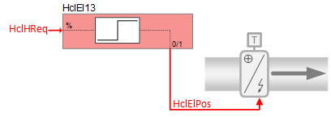
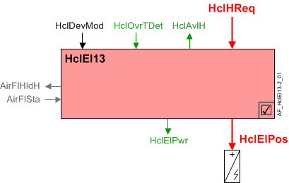
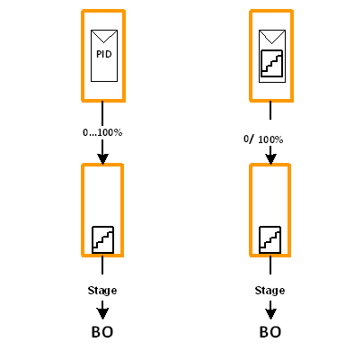

Electric heating coil single stage, one binary output (HclEl13)
 | This application function operates a single-stage electric heating coil. The on/off-command is calculated based on a request signal (from the room controllers) received for heating. There is an optional binary input for overtemperature detection. This application function is NOT available for: DXR2x09T. |
Required elements and how to configure them:
Element | I/O | Signal type |
|---|---|---|
HclElPos "Heating coil electric position" | On-board output, Heating coil valve position | Electric 1-stage Normally open |
 WARNING
WARNING

Electric heat coils require safety limit thermostat
Improper installation of electric heating coils can result in fire and cause destruction of life and property.
- Install a high temperature cut-out switch on all electric heating elements.
- Ensure that all wiring and installation conform to applicable safety codes and regulations.
Function
The figure below shows BACnet objects associated with this application function. Primary signal flow is summarized as follows:
Heating coil heating request (HclHReq) is received and processed into binary output signal for heating coil electric position (HclElPos).
Basic function: Accept request signal from associated room controller and pass it through a device mode logic switch; Output the result as a command to the BACnet object that controls the device.

| Command or request (or related) |
| Notification of condition or status, or availability |
| Device mode |
| Interlock (internal signal, not a BACnet object; see Interlocks section for additional information) |


Interlocks
Room automation interlocks are internal signals that coordinate interaction between HVAC devices. They are not visible in ABT Site or web interface, but parameters associated with them are. See comment column for hints on parameters that affect interlock functionality.
Signal | Type | Direction | Description | Comment |
|---|---|---|---|---|
AirFlSta | Boolean | In | Air flow status | No related parameters in electric coils. AirFlSta is hard-coded. |
AirFlHReq | Boolean | Out | Air flow heating request | See Configuration section for parameters named "...AirFlHReq". |
AirFlHldH | Boolean | Out | Air flow hold for heating | See Configuration section for parameters named "...AirFlHldH". |
AirManOff | Boolean | In | Air manual off |
|
Binary control of electric heating coil, single stage operation: In response to heating demand, the heating coil electric position (HclElPos) is staged on/off to control the room temperature at setpoint. It also can be commanded in response to external trigger(s) for special modes such as warm-up or cool down, or safety conditions.
Note
There are no delay on / off timers for turning the coil on and off.
Note
This AF does not perform loop control; its main purpose is to run commands. Loop control processes (for this AF) are managed in the "room" AF(s) that collaborate with this AF to command the end device.
Device mode: The input signal for device mode is a multistate value.
HclDevMod supports the following states:
- Off
- Control mode (modulation)
- Fully open
Heating available status: When the heating coil is available for heating, the binary output signal for "Heating coil available for heating" (HclAvlH) will be "Yes" (available). HclAvlH is used by the system to regulate heating resources. For example, if there is a call for heating but the heating coil is not available because it is already at maximum capacity (because device mode is fully open), then HclAvlH will signal "No" and the next available heating resource in the temperature control sequence will be activated.
For heating available status to be "Yes", device mode must equal "Control mode" (modulation).
High temperature cut-out switch: This AF has a heating coil over-temperature detection input (HclOvrTDet) from a high temperature cut-out switch. When the switch activates, the coil is commanded off at equipment protection priority and a signal is sent to the source of air flow to hold / maintain air flow. A timer prevents the source of air flow from stopping until after the timer expires.
Parameter EnOvrTDetIn must be set to 1:Yes for the cut-out switch to function (see Configuration).
Electric power usage: The nominal electric power usage of the electric heating coil is provided for energy monitoring and coordination with other devices. When the coil is on, HclElPwr = NomElPwr. Zero power is used when coil is off.
Configuration
 Parameters
Parameters
Description | Parameter | Default value |
|---|---|---|
Nominal electric power | NomElPwr | 0.4 [kW] |
Enable overtemperature detector input 0:No | EnOvrTDetIn | 0:No |
High outside air temperature lockout | ||
Enable lockout heating coil at high outside air temperature 0:No | EnLockHclTOaHi | 0:No |
Lockout heating coil at high outside air temperature | LockHclTOaHi | 13.0 [°C] |
Outside air temperature hysteresis for lockout heating coil | HysTOaLockHcl | 1.0 [K] |
Interlocks | ||
Switch-on point for air volume flow hold heating | SwiOnAirFlHldH | 66 [%] |
Hysteresis for air volume flow hold heating | HysAirFlHldH | 33 [%] |
Switch-off delay for hold signal for air volume flow heating | DlyOffAflHldH | 30 [s] |
Switch-on point for air volume flow heating request | SwiOnAirFlHReq | 66 [%] |
Hysteresis for air volume flow heating request | HysAirFlHReq | 33 [%] |
Switch-on delay for air volume flow heating request | DlyOnAirFlHReq | 0 [s] |
Internal settings – do not change | ||
Temperature unit | TUnit | [°C] |
Temperature difference unit | TDiffUnit | [K] |
Interface
Interface | Description | Type | Ref. | Owned by |
|---|---|---|---|---|
HclElPos | Heating coil electric position | BO | ◉ | Room segment / Device |
HclOvrTDet | Heating coil overtemperature detector 0:Off | BI | ◉ | Room segment / Device |
HclDevMod | Heating coil device mode 1:Off | MPrcVal | ● | - |
HclHReq | Heating coil heating request | ACalcVal | ● | - |
HclAvlH | Heating coil available for heating 0:No | BCalcVal | ● | - |
HclElPwr | Heating coil electric power | ACalcVal | ● | - |
Engineering and commissioning
Troubleshooting tip: Why is the coil off at high priority?
Probably because there is no air flow. Check fan or damper. Maybe because of high temp safety input. (Confirm function of safety switch.)
Design engineer may choose the type of output to the electric coil(s). The logic to create each output type is embedded in the controller. There are two types of output:
- PID loop control creates 0 to 100% analog heating demand signal to drive a staged electric heating coil
- Staged loop control creates 0 / 100% staged signal to drive a staged electric heating coil
